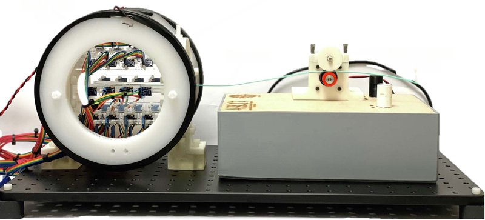

Magnetic navigation · msrc_wu2023
MSRC
Magnetically steerable robotic catheter with integrated magnetic localisation

1 / 6


- Family
- Magnetic navigation (magnetic-navigation)
- Devices
- Cook G11430 catheter with 40 mm flexure-patterned heat-shrink distal end (3.2 mm pre-shrink OD), tip stack of N52 ring magnets 3 mm OD / 1.6 mm ID / 6 mm
- Degrees of freedom
- 2 (insertion and planar steering; mohanraj2022 Sec. I, II-B); hardware: Helmholtz pair (220 mm diameter, 120 turns, up to 11 A) steering; friction-drive feeder on stepper
- Push
- Magnetic
- Twist
- Field direction
- Tested up to
- Phantom
- Sim-to-real
- None found — No simulation-trained controller found for this robot.
Testing
- Highest level
- Phantom
- What was tested
- three 3D-printed phantoms; catheter navigates under steering plus localisation; trial counts N.R.
- Key numbers
- mean position estimate error 0.95 mm after calibration; latency 400 ms mohanraj2022: 25 mT steering field at 13 A (power-supply limit); maximum tip deflection 12 mm; calculated pushing force 8 N (Sec. III-A, IV); one navigation through a 25 deg bifurcation of a leg phantom in 20 s (Sec. III-B, Fig. 9).
Mechanism
- Push (translation)
- magnetic (steering) + friction-drive feeder (drive wheel with a thick urethane layer, NEMA 17 stepper, spring preload; mohanraj2022 Sec. II-C, III-A)
- Twist (rotation)
- field direction
- Device range
- N.R.
- Target anatomy
- peripheral arterial disease (lower-limb phantoms: Y 20 deg, S-shaped, 30 deg branch)
Sensing and interface
- Force sensing
- 16 three-axis magnetoresistive sensors (QMC5883L) locate the tip
- Leader and haptics
- no (human operator controls insertion)
- Imaging
- fluoroscopy only at bifurcations; digital microscope in bench tests
- Sterility
- N.R.
Size
- Footprint (mm)
- Helmholtz 220 mm diameter, 110 mm spacing
- Mass (kg)
- N.R.
Simulation
- Simulation model
- mohanraj2022: analytical Helmholtz-field and dipole-torque model, Ansys Maxwell 3D finite elements for field and torque, SolidWorks finite elements for the flexure bending; tip displacement FE vs experiment RMSE 0.575 and 0.328 mm (Sec. II, IV, Figs. 4, 6)
- Sim-trained controller
- none found
Versions
- Lineage
- 2022 BioRob: kirigami heat-shrink catheter, Helmholtz pair and friction-drive feeder, manual knobs (mohanraj2022_kirigami, full) -> 2023 RA-L: integrated magnetic localisation (wu2023_integrated)
Sources
- Integrated Magnetic Location Sensing and Actuation of Steerable Robotic Catheters for Peripheral Arterial Disease Treatment · IEEE Robotics and Automation Letters, 2023 · doi:10.1109/lra.2023.3295297 [wu2023_integrated]
- A Kirigami-Based Magnetically Steerable Robotic Catheter for Treatment of Peripheral Artery Disease · 2022 9th IEEE RAS/EMBS International Conference for Biomedical Robotics and Biomechatronics (BioRob), 2022 · doi:10.1109/biorob52689.2022.9925350 [mohanraj2022_kirigami]
Notes
- Notes
- Uniform field, so steering works only in a plane per bifurcation. F4: hardware origin is mohanraj2022 (same coils, catheter, magnets and feeder).
This record
- Read level
- full — full (abstract, hardware, results by grep) mohanraj2022_kirigami full (2026-10-14).
- Picture
- wu2023_integrated Fig. 6 centre (Helmholtz coils with 16-sensor array, catheter feed box) ↗ — licence: publisher copyright (IEEE); grade B
- Picture changes
- native extract (4242 px); crop; 7 labels erased and 4 leader lines erased (LaMa), one of which ran over the white coil face to a sensor; sensor-frame inset and axis triad on white background painted white
- Found by
- actuated-tip: Search of actuated-tip and magnetic devices.
- Data
- JSON · YAML:
records/robots/msrc_wu2023.yaml - Correction
- Suggest a correction [repository not created yet]